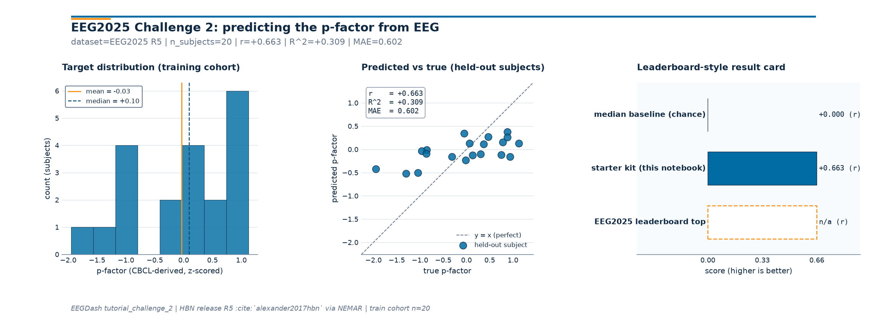
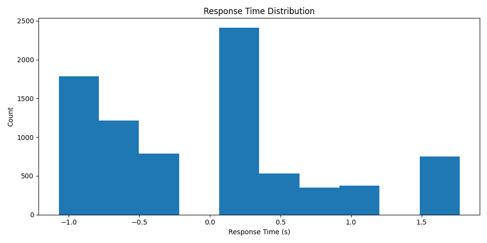

Note
Go to the end to download the full example code or to run this example in your browser via Binder.
Challenge 2: Predicting the p-factor from EEG#
#
Preliminary notes
Before we begin, I just want to make a deal with you, ok? This is a community competition with a strong open-source foundation. When I say open-source, I mean volunteer work.
So, if you see something that does not work or could be improved, first, please be kind, and we will fix it together on GitHub, okay?
The entire decoding community will only go further when we stop solving the same problems over and over again, and it starts working together.
#
Overview
The psychopathology factor (P-factor) is a widely recognized construct in mental health research, representing a common underlying dimension of psychopathology across various disorders. Currently, the P-factor is often assessed using self-report questionnaires or clinician ratings, which can be subjective, prone to bias, and time-consuming. The Challenge 2 consists of developing a model to predict the P-factor from EEG recordings.
The challenge encourages learning physiologically meaningful signal representations and discovery of reproducible biomarkers. Models of any size should emphasize robust, interpretable features that generalize across subjects, sessions, and acquisition sites.
Unlike a standard in-distribution classification task, this regression problem stresses out-of-distribution robustness and extrapolation. The goal is not only to minimize error on seen subjects, but also to transfer effectively to unseen data. Ensure the dataset is available locally. If not, see the dataset download guide.
Contents of this start kit
Note
If you need additional explanations on the EEGChallengeDataset class, dataloading, braindecode’s deep learning models, or brain decoding in general, please refer to the start-kit of challenge 1 which delves deeper into these topics.
More contents will be released during the competition inside the
eegdashexamples webpage.Prerequisites
The tutorial assumes prior knowledge of:
Standard neural network architectures (e.g., CNNs)
Optimization by batch gradient descent and backpropagation
Overfitting, early stopping, and regularization
Some knowledge of PyTorch
Basic familiarity with EEG and preprocessing
An appreciation for open-source work :)
Install dependencies on Colab
Note
These installs are optional; skip on local environments where you already have the dependencies installed.
pip install eegdash
Imports
from pathlib import Path
import math
import os
import random
import torch
from torch.utils.data import DataLoader
from torch import optim
from torch.nn.functional import l1_loss
from braindecode.preprocessing import create_fixed_length_windows
from braindecode.datasets.base import EEGWindowsDataset, BaseConcatDataset, BaseDataset
from braindecode.models import EEGNeX
from eegdash import EEGChallengeDataset
from eegdash.paths import get_default_cache_dir
#
Warning
In case of Colab, before starting, make sure you’re on a GPU instance for faster training! If running on Google Colab, please request a GPU runtime by clicking Runtime/Change runtime type in the top bar menu, then selecting ‘T4 GPU’ under ‘Hardware accelerator’.
Identify whether a CUDA-enabled GPU is available
device = "cuda" if torch.cuda.is_available() else "cpu"
if device == "cuda":
msg = "CUDA-enabled GPU found. Training should be faster."
else:
msg = (
"No GPU found. Training will be carried out on CPU, which might be "
"slower.\n\nIf running on Google Colab, you can request a GPU runtime by"
" clicking\n`Runtime/Change runtime type` in the top bar menu, then "
"selecting 'T4 GPU'\nunder 'Hardware accelerator'."
)
print(msg)
#
No GPU found. Training will be carried out on CPU, which might be slower.
If running on Google Colab, you can request a GPU runtime by clicking
`Runtime/Change runtime type` in the top bar menu, then selecting 'T4 GPU'
under 'Hardware accelerator'.
Understanding the P-factor regression task
The psychopathology factor (P-factor) is a widely recognized construct in mental health research, representing a common underlying dimension of psychopathology across various disorders. The P-factor is thought to reflect the shared variance among different psychiatric conditions, suggesting that individuals with higher P-factor scores may be more vulnerable to a range of mental health issues. Currently, the P-factor is often assessed using self-report questionnaires or clinician ratings, which can be subjective, prone to bias, and time-consuming. In the dataset of this challenge, the P-factor was assessed using the Child Behavior Checklist (CBCL) McElroy et al., (2017).
The goal of Challenge 2 is to develop a model to predict the P-factor from EEG recordings. The feasibility of using EEG data for this purpose is still an open question. The solution may involve finding meaningful representations of the EEG data that correlate with the P-factor scores. The challenge encourages learning physiologically meaningful signal representations and discovery of reproducible biomarkers. If contestants are successful in this task, it could pave the way for more objective and efficient assessments of the P-factor in clinical settings.
Define local path and (down)load the data
In this challenge 2 example, we load the EEG 2025 release using EEGChallengeDataset. Note: in this example notebook, we load the contrast change detection task from one mini release only as an example. Naturally, you are encouraged to train your models on all complete releases, using data from all the tasks you deem relevant.
The first step is to define the cache folder! Match tests’ cache layout under ~/eegdash_cache/eeg_challenge_cache
DATA_DIR = Path(get_default_cache_dir()).resolve()
# Creating the path if it does not exist
DATA_DIR.mkdir(parents=True, exist_ok=True)
# We define the list of releases to load.
# Here, only release 5 is loaded.
release_list = ["R5"]
all_datasets_list = [
EEGChallengeDataset(
release=release,
task="contrastChangeDetection",
mini=True,
description_fields=[
"subject",
"session",
"run",
"task",
"age",
"gender",
"sex",
"p_factor",
],
cache_dir=DATA_DIR,
)
for release in release_list
]
print("Datasets loaded")
sub_rm = ["NDARWV769JM7"]
#
╭────────────────────── EEG 2025 Competition Data Notice ──────────────────────╮
│ This object loads the HBN dataset that has been preprocessed for the EEG │
│ Challenge: │
│ * Downsampled from 500Hz to 100Hz │
│ * Bandpass filtered (0.5-50 Hz) │
│ │
│ For full preprocessing applied for competition details, see: │
│ https://github.com/eeg2025/downsample-datasets │
│ │
│ The HBN dataset have some preprocessing applied by the HBN team: │
│ * Re-reference (Cz Channel) │
│ │
│ IMPORTANT: The data accessed via `EEGChallengeDataset` is NOT identical to │
│ what you get from EEGDashDataset directly. │
│ If you are participating in the competition, always use │
│ `EEGChallengeDataset` to ensure consistency with the challenge data. │
╰──────────────────────── Source: EEGChallengeDataset ─────────────────────────╯
Datasets loaded
Combine the datasets into a single one
Here, we combine the datasets from the different releases into a single
BaseConcatDataset object.
%%
all_datasets = BaseConcatDataset(all_datasets_list)
print(all_datasets.description)
for ds in all_datasets_list:
ds.download_all(n_jobs=os.cpu_count())
#
subject run ... seqlearning8target symbolsearch
0 NDARAH793FBF 2 ... available available
1 NDARAH793FBF 3 ... available available
2 NDARAH793FBF 1 ... available available
3 NDARAJ689BVN 3 ... unavailable available
4 NDARAJ689BVN 2 ... unavailable available
5 NDARAJ689BVN 1 ... unavailable available
6 NDARAP785CTE 1 ... available available
7 NDARAP785CTE 3 ... available available
8 NDARAP785CTE 2 ... available available
9 NDARAU708TL8 1 ... available available
10 NDARAU708TL8 2 ... available available
11 NDARAU708TL8 3 ... available available
12 NDARBE091BGD 3 ... unavailable available
13 NDARBE091BGD 2 ... unavailable available
14 NDARBE091BGD 1 ... unavailable available
15 NDARBE103DHM 1 ... available available
16 NDARBE103DHM 2 ... available available
17 NDARBE103DHM 3 ... available available
18 NDARBF851NH6 3 ... available available
19 NDARBF851NH6 2 ... available available
20 NDARBF851NH6 1 ... available available
21 NDARBH228RDW 1 ... available available
22 NDARBH228RDW 2 ... available available
23 NDARBH228RDW 3 ... available available
24 NDARBJ674TVU 1 ... unavailable available
25 NDARBJ674TVU 3 ... unavailable available
26 NDARBJ674TVU 2 ... unavailable available
27 NDARBM433VER 1 ... available available
28 NDARBM433VER 2 ... available available
29 NDARBM433VER 3 ... available available
30 NDARCA740UC8 2 ... available available
31 NDARCA740UC8 3 ... available available
32 NDARCA740UC8 1 ... available available
33 NDARCU633GCZ 1 ... available available
34 NDARCU633GCZ 3 ... available available
35 NDARCU633GCZ 2 ... available available
36 NDARCU736GZ1 2 ... unavailable available
37 NDARCU736GZ1 3 ... unavailable available
38 NDARCU736GZ1 1 ... unavailable available
39 NDARCU744XWL 1 ... available available
40 NDARCU744XWL 3 ... available available
41 NDARCU744XWL 2 ... available available
42 NDARDC843HHM 3 ... available available
43 NDARDC843HHM 2 ... available available
44 NDARDC843HHM 1 ... available available
45 NDARDH086ZKK 2 ... available available
46 NDARDH086ZKK 3 ... available available
47 NDARDH086ZKK 1 ... available available
48 NDARDL305BT8 1 ... available available
49 NDARDL305BT8 2 ... available available
50 NDARDL305BT8 3 ... available available
51 NDARDU853XZ6 3 ... unavailable available
52 NDARDU853XZ6 2 ... unavailable available
53 NDARDU853XZ6 1 ... unavailable available
54 NDARDV245WJG 3 ... unavailable available
55 NDARDV245WJG 2 ... unavailable available
56 NDARDV245WJG 1 ... unavailable available
57 NDAREC480KFA 1 ... available available
58 NDAREC480KFA 2 ... available available
59 NDAREC480KFA 3 ... available available
[60 rows x 26 columns]
Inspect your data
We can check what is inside the dataset consuming the MNE-object inside the Braindecode dataset.
The following snippet, if uncommented, will show the first 10 seconds of the raw EEG signal. We can also inspect the data further by looking at the events and annotations. We strongly recommend you to take a look into the details and check how the events are structured.
raw = all_datasets.datasets[0].raw # mne.io.Raw object
print(raw.info)
raw.plot(duration=10, scalings="auto", show=True)
print(raw.annotations)
SFREQ = 100
#

<Info | 9 non-empty values
bads: []
ch_names: E1, E2, E3, E4, E5, E6, E7, E8, E9, E10, E11, E12, E13, E14, ...
chs: 129 EEG
custom_ref_applied: False
highpass: 0.0 Hz
line_freq: 60.0
lowpass: 50.0 Hz
meas_date: 2025-08-19 00:06:17 UTC
nchan: 129
projs: []
sfreq: 100.0 Hz
subject_info: <subject_info | >
>
Using matplotlib as 2D backend.
<Annotations | 74 segments: 9999 (1), break cnt (1), ...>
Wrap the data into a PyTorch-compatible dataset
The class below defines a dataset wrapper that will extract 2-second windows, uniformly sampled over the whole signal. In addition, it will add useful information about the extracted windows, such as the p-factor, the subject or the task.
class DatasetWrapper(BaseDataset):
def __init__(self, dataset: EEGWindowsDataset, crop_size_samples: int, seed=None):
self.dataset = dataset
self.crop_size_samples = crop_size_samples
self.rng = random.Random(seed)
def __len__(self):
return len(self.dataset)
def __getitem__(self, index):
X, _, crop_inds = self.dataset[index]
# P-factor label:
p_factor = self.dataset.description["p_factor"]
p_factor = float(p_factor)
# Additional information:
infos = {
"subject": self.dataset.description["subject"],
"sex": self.dataset.description["sex"],
"age": float(self.dataset.description["age"]),
"task": self.dataset.description["task"],
"session": self.dataset.description.get("session", None) or "",
"run": self.dataset.description.get("run", None) or "",
}
# Randomly crop the signal to the desired length:
i_window_in_trial, i_start, i_stop = crop_inds
assert i_stop - i_start >= self.crop_size_samples, f"{i_stop=} {i_start=}"
start_offset = self.rng.randint(0, i_stop - i_start - self.crop_size_samples)
i_start = i_start + start_offset
i_stop = i_start + self.crop_size_samples
X = X[:, start_offset : start_offset + self.crop_size_samples]
return X, p_factor, (i_window_in_trial, i_start, i_stop), infos
# We filter out certain recordings, create fixed length windows and finally make use of our `DatasetWrapper`.
Filter out recordings that are too short or missing p_factor
all_datasets = BaseConcatDataset(
[
ds
for ds in all_datasets.datasets
if ds.description.subject not in sub_rm
and ds.raw.n_times >= 4 * SFREQ
and len(ds.raw.ch_names) == 129
and "p_factor" in ds.description
and ds.description["p_factor"] is not None
and not math.isnan(ds.description["p_factor"])
]
)
# Create 4-seconds windows with 2-seconds stride
windows_ds = create_fixed_length_windows(
all_datasets,
window_size_samples=4 * SFREQ,
window_stride_samples=2 * SFREQ,
drop_last_window=True,
)
# Wrap each sub-dataset in the windows_ds
windows_ds = BaseConcatDataset(
[DatasetWrapper(ds, crop_size_samples=2 * SFREQ) for ds in windows_ds.datasets]
)
#
Inspect the label distribution
import numpy as np
from skorch.helper import SliceDataset
y_label = np.array(list(SliceDataset(windows_ds, 1)))
# Plot histogram of the response times with matplotlib
import matplotlib.pyplot as plt
fig, ax = plt.subplots(figsize=(10, 5))
ax.hist(y_label)
ax.set_title("Response Time Distribution")
ax.set_xlabel("Response Time (s)")
ax.set_ylabel("Count")
plt.tight_layout()
plt.show()
#

Define, train and save a model
Now we have our pytorch dataset necessary for the training!
Below, we define a simple EEGNeX model from Braindecode. All the braindecode models expect the input to be of shape (batch_size, n_channels, n_times) and have a test coverage about the behavior of the model. However, you can use any pytorch model you want.
Initialize model
model = EEGNeX(n_chans=129, n_outputs=1, n_times=2 * SFREQ).to(device)
# Specify optimizer
optimizer = optim.Adamax(params=model.parameters(), lr=0.002)
print(model)
# Finally, we can train our model. Here we define a simple training loop using pure PyTorch.
# In this example, we only train for a single epoch. Feel free to increase the number of epochs.
# Create PyTorch Dataloader
num_workers = (
0 # Set num_workers to 0 to avoid multiprocessing issues in notebooks/tutorials.
)
dataloader = DataLoader(
windows_ds, batch_size=128, shuffle=True, num_workers=num_workers
)
n_epochs = 1
# Train model for 1 epoch
for epoch in range(n_epochs):
for idx, batch in enumerate(dataloader):
# Reset gradients
optimizer.zero_grad()
# Unpack the batch
X, y, crop_inds, infos = batch
X = X.to(dtype=torch.float32, device=device)
y = y.to(dtype=torch.float32, device=device).unsqueeze(1)
# Forward pass
y_pred = model(X)
# Compute loss
loss = l1_loss(y_pred, y)
print(f"Epoch {0} - step {idx}, loss: {loss.item()}")
# Gradient backpropagation
loss.backward()
optimizer.step()
# Finally, we can save the model for later use
torch.save(model.state_dict(), "weights_challenge_2.pt")
print("Model saved as 'weights_challenge_2.pt'")
/home/runner/work/EEGDash/EEGDash/.venv/lib/python3.11/site-packages/torch/nn/modules/conv.py:548: UserWarning: Using padding='same' with even kernel lengths and odd dilation may require a zero-padded copy of the input be created (Triggered internally at /pytorch/aten/src/ATen/native/Convolution.cpp:1024.)
return F.conv2d(
================================================================================================================================================================
Layer (type (var_name):depth-idx) Input Shape Output Shape Param # Kernel Shape
================================================================================================================================================================
EEGNeX (EEGNeX) [1, 129, 200] [1, 1] -- --
├─Sequential (block_1): 1-1 [1, 129, 200] [1, 8, 129, 200] -- --
│ └─Rearrange (0): 2-1 [1, 129, 200] [1, 1, 129, 200] -- --
│ └─Conv2d (1): 2-2 [1, 1, 129, 200] [1, 8, 129, 200] 512 [1, 64]
│ └─BatchNorm2d (2): 2-3 [1, 8, 129, 200] [1, 8, 129, 200] 16 --
├─Sequential (block_2): 1-2 [1, 8, 129, 200] [1, 32, 129, 200] -- --
│ └─Conv2d (0): 2-4 [1, 8, 129, 200] [1, 32, 129, 200] 16,384 [1, 64]
│ └─BatchNorm2d (1): 2-5 [1, 32, 129, 200] [1, 32, 129, 200] 64 --
├─Sequential (block_3): 1-3 [1, 32, 129, 200] [1, 64, 1, 50] -- --
│ └─ParametrizedConv2dWithConstraint (0): 2-6 [1, 32, 129, 200] [1, 64, 1, 200] -- [129, 1]
│ │ └─ModuleDict (parametrizations): 3-1 -- -- 8,256 --
│ └─BatchNorm2d (1): 2-7 [1, 64, 1, 200] [1, 64, 1, 200] 128 --
│ └─ELU (2): 2-8 [1, 64, 1, 200] [1, 64, 1, 200] -- --
│ └─AvgPool2d (3): 2-9 [1, 64, 1, 200] [1, 64, 1, 50] -- [1, 4]
│ └─Dropout (4): 2-10 [1, 64, 1, 50] [1, 64, 1, 50] -- --
├─Sequential (block_4): 1-4 [1, 64, 1, 50] [1, 32, 1, 50] -- --
│ └─Conv2d (0): 2-11 [1, 64, 1, 50] [1, 32, 1, 50] 32,768 [1, 16]
│ └─BatchNorm2d (1): 2-12 [1, 32, 1, 50] [1, 32, 1, 50] 64 --
├─Sequential (block_5): 1-5 [1, 32, 1, 50] [1, 48] -- --
│ └─Conv2d (0): 2-13 [1, 32, 1, 50] [1, 8, 1, 50] 4,096 [1, 16]
│ └─BatchNorm2d (1): 2-14 [1, 8, 1, 50] [1, 8, 1, 50] 16 --
│ └─ELU (2): 2-15 [1, 8, 1, 50] [1, 8, 1, 50] -- --
│ └─AvgPool2d (3): 2-16 [1, 8, 1, 50] [1, 8, 1, 6] -- [1, 8]
│ └─Dropout (4): 2-17 [1, 8, 1, 6] [1, 8, 1, 6] -- --
│ └─Flatten (5): 2-18 [1, 8, 1, 6] [1, 48] -- --
├─ParametrizedLinearWithConstraint (final_layer): 1-6 [1, 48] [1, 1] 1 --
│ └─ModuleDict (parametrizations): 2-19 -- -- -- --
│ │ └─ParametrizationList (weight): 3-2 -- [1, 48] 48 --
================================================================================================================================================================
Total params: 62,353
Trainable params: 62,353
Non-trainable params: 0
Total mult-adds (Units.MEGABYTES): 437.76
================================================================================================================================================================
Input size (MB): 0.10
Forward/backward pass size (MB): 16.65
Params size (MB): 0.22
Estimated Total Size (MB): 16.97
================================================================================================================================================================
Epoch 0 - step 0, loss: 0.6595102548599243
Epoch 0 - step 1, loss: 0.6852243542671204
Epoch 0 - step 2, loss: 0.6157675981521606
Epoch 0 - step 3, loss: 0.6837813854217529
Epoch 0 - step 4, loss: 0.6273059248924255
Epoch 0 - step 5, loss: 0.6112489104270935
Epoch 0 - step 6, loss: 0.6706140637397766
Epoch 0 - step 7, loss: 0.6724717617034912
Epoch 0 - step 8, loss: 0.5923201441764832
Epoch 0 - step 9, loss: 0.5817894339561462
Epoch 0 - step 10, loss: 0.66285240650177
Epoch 0 - step 11, loss: 0.6003061532974243
Epoch 0 - step 12, loss: 0.5460988879203796
Epoch 0 - step 13, loss: 0.659344494342804
Epoch 0 - step 14, loss: 0.6603589057922363
Epoch 0 - step 15, loss: 0.62630695104599
Epoch 0 - step 16, loss: 0.705104410648346
Epoch 0 - step 17, loss: 0.644750714302063
Epoch 0 - step 18, loss: 0.6469939947128296
Epoch 0 - step 19, loss: 0.6899573802947998
Epoch 0 - step 20, loss: 0.6246553659439087
Epoch 0 - step 21, loss: 0.6209437847137451
Epoch 0 - step 22, loss: 0.6213167309761047
Epoch 0 - step 23, loss: 0.6941438913345337
Epoch 0 - step 24, loss: 0.7457129955291748
Epoch 0 - step 25, loss: 0.6947797536849976
Epoch 0 - step 26, loss: 0.5986620187759399
Epoch 0 - step 27, loss: 0.691387951374054
Epoch 0 - step 28, loss: 0.6766198873519897
Epoch 0 - step 29, loss: 0.699390709400177
Epoch 0 - step 30, loss: 0.6885965466499329
Epoch 0 - step 31, loss: 0.6948871612548828
Epoch 0 - step 32, loss: 0.7450875639915466
Epoch 0 - step 33, loss: 0.6357862949371338
Epoch 0 - step 34, loss: 0.6302712559700012
Epoch 0 - step 35, loss: 0.650855302810669
Epoch 0 - step 36, loss: 0.6541792750358582
Epoch 0 - step 37, loss: 0.6642729043960571
Epoch 0 - step 38, loss: 0.6543867588043213
Epoch 0 - step 39, loss: 0.5796289443969727
Epoch 0 - step 40, loss: 0.6912276744842529
Epoch 0 - step 41, loss: 0.6301917433738708
Epoch 0 - step 42, loss: 0.6589073538780212
Epoch 0 - step 43, loss: 0.745667576789856
Epoch 0 - step 44, loss: 0.6700310111045837
Epoch 0 - step 45, loss: 0.5434455275535583
Epoch 0 - step 46, loss: 0.7162162065505981
Epoch 0 - step 47, loss: 0.6084006428718567
Epoch 0 - step 48, loss: 0.7004634737968445
Epoch 0 - step 49, loss: 0.6013221740722656
Epoch 0 - step 50, loss: 0.6982015371322632
Epoch 0 - step 51, loss: 0.6942934393882751
Epoch 0 - step 52, loss: 0.587628185749054
Epoch 0 - step 53, loss: 0.6257687211036682
Epoch 0 - step 54, loss: 0.6554971933364868
Epoch 0 - step 55, loss: 0.6242427229881287
Epoch 0 - step 56, loss: 0.6644169092178345
Epoch 0 - step 57, loss: 0.6595700979232788
Epoch 0 - step 58, loss: 0.6291913986206055
Epoch 0 - step 59, loss: 0.6671919226646423
Epoch 0 - step 60, loss: 0.5710630416870117
Epoch 0 - step 61, loss: 0.6310305595397949
Epoch 0 - step 62, loss: 0.6269324421882629
Epoch 0 - step 63, loss: 0.6741854548454285
Epoch 0 - step 64, loss: 0.461608350276947
Model saved as 'weights_challenge_2.pt'
Total running time of the script: (6 minutes 37.163 seconds)